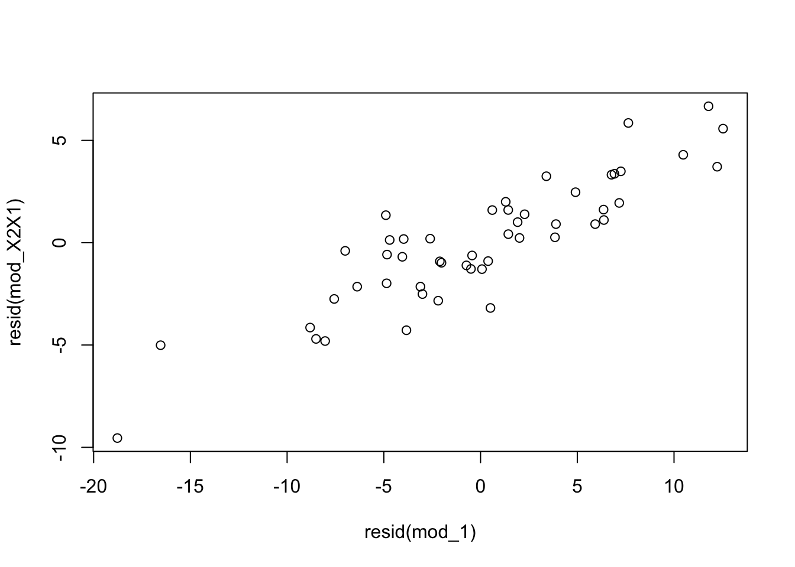
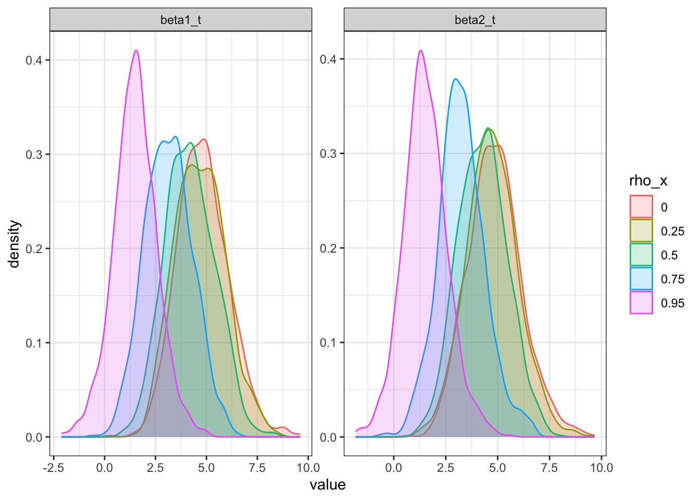
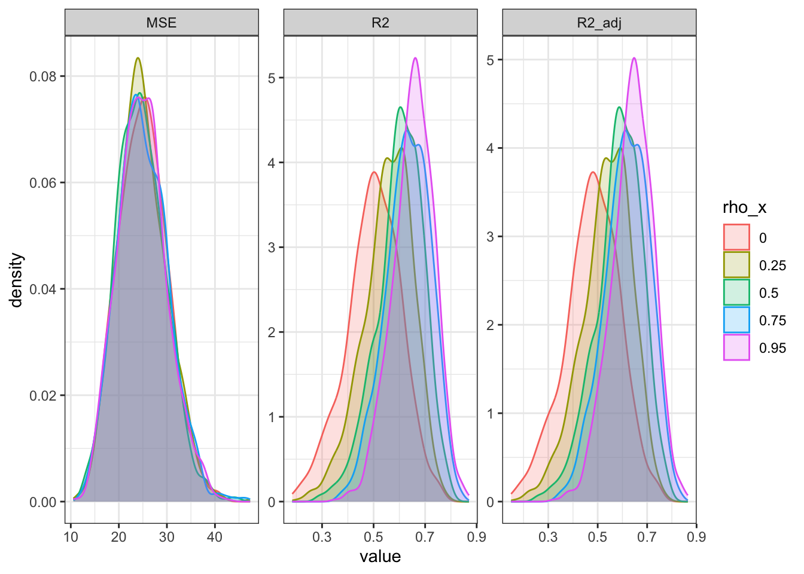

# NOTE: generating a single dataset to use for many of the following examples
# generate predictor data
# -> num_x number of base predictors (assumed known; generated from same dist)
# -> num_noise unimportant predictors (placed at end)
n <- 50
num_x <- 2
num_noise <- 1
X <- sapply(1:(num_x+num_noise), function(i) {rnorm(n = n, mean = 0, sd = 3)}) %>%
cbind(rep(1, n), .)
# set betas according to which ones are noise (and intercept)
betas <- c(1, rep(2, num_x), rep(0, num_noise))
# generate mean response and add random error
Y <- X %*% betas + rnorm(n, mean = 0, sd = 3)6.1 Extra sums of squares
6.1.1 Overview
Basic idea
-
An extra sum of squares measures the marginal reduction in the error sum of squares when one or several predictor variables are added to the regression model, given that other predictor variables are already in the model.
- So it is the difference in \(SSE\) with the original variables in the model compared to when additional ones are added (remember \(SSE\) always decreases when more variables are added to the model).
Equivalently, one can view an extra sum of squares as measuring the marginal increase in the regression sum of squares when one or several predictor variables are added to the regression model (likewise, \(SSR\) always increases with additional terms).
6.1.2 Definitions
Using both perspectives, we can define
\[SSR(X_2 \mid X_1) \hspace{10pt} = \hspace{10pt} SSE(X_1) - SSE(X_1, X_2) \hspace{10pt} = \hspace{10pt} SSR(X_1, X_2) - SSR(X_1)\]
Extensions for three or more variables are straightforward.
\[SSR(X_3 \mid X_1, X_2) \hspace{10pt} = \hspace{10pt} SSE(X_1, X_2) - SSE(X_1, X_2, X_3) \hspace{10pt} = \hspace{10pt} SSR(X_1, X_2, X_3) - SSR(X_1, X_2)\]
Note that we can also switch the order, say if \(X_2\) enters the model first, then \(X_1\).
6.1.3 Decomposition of \(SSR\) into extra sums of squares
In multiple regression, unlike simple linear regression, we can obtain a variety of decompositions of the regression sum of squares \(SSR\) into extra sums of squares.
It is obvious that the number of possible decompositions becomes vast as the number of \(X\) variables in the regression model increases.
6.1.4 ANOVA table containing decomposition of \(SSR\)
ANOVA tables can be constructed containing decompositions of the regression sum of squares into extra sums of squares.
Note that each extra sum of squares involving a single extra \(X\) variable has associated with it one degree of freedom. The resulting mean squares are constructed as usual.
\[MSR(X_2 \mid X_1) = \frac{SSR(X_2 \mid X_1)}{1}\]
Extra sums of squares involving two extra \(X\) variables, such as \(SSR(X_2, X_3 \mid X_1)\), have two degrees of freedom associated with them. This follows because we can express such an extra sum of squares as a sum of two extra sums of squares, each associated with one df. For example, by definition of the extra sums of squares, we have
\[SSR(X_2, X_3 \mid X_1) = SSR(X_2 \mid X_1) + SSR(X_3 \mid X_1, X_2)\]
The mean square is therefore obtained as follows:
\[MSR(X_2, X_3 \mid X_1) = \frac{SSR(X_2, X_3 \mid X_1)}{2}\]
Many computer regression packages provide decompositions of \(SSR\) into single-degree-of-freedom extra sums of squares, usually in the order in which the \(X\) variables are entered into the model. Thus, if the \(X\) variables are entered in the order \(X_1\), \(X_2\), \(X_3\), the extra Sums of squares given in the output are:
\[ \begin{align*} &SSR(X_1)\\ &SSR(X_2 \mid X_1)\\ &SSR(X_3 \mid X_1, X_2)\\ \end{align*} \]
If an extra sum of squares involving several extra \(X\) variables is desired, it can be obtained by summing appropriate single-degree-of-freedom extra sums of squares.
The reason why extra sums of squares are of interest is that they occur in a variety of tests about regression coefficients where the question of concern is whether certain \(X\) variables can be dropped from the regression model.
Demo
Verify the \(SS\) given in anova() are conditional.
# combine data
data_sample <- cbind(Y, X[, -1]) %>%
data.frame
colnames(data_sample) <- c("Y", paste0("X", 1:sum(num_x, num_noise)))
# fit models
mod_1 <- lm(Y ~ X1, data_sample)
mod_12 <- lm(Y ~ X1 + X2, data_sample)
mod_123 <- lm(Y ~ X1 + X2 + X3, data_sample)
# get anova table
anova(mod_123) %>% tidy# A tibble: 4 × 6
term df sumsq meansq statistic p.value
<chr> <int> <dbl> <dbl> <dbl> <dbl>
1 X1 1 1504. 1504. 118. 2.71e-14
2 X2 1 1460. 1460. 115. 4.45e-14
3 X3 1 0.566 0.566 0.0445 8.34e- 1
4 Residuals 46 586. 12.7 NA NA # verify conditional sum of squares
# -> just X1 in the model
compare(mod_123 %>% anova %>% tidy %>% filter(term == "X1") %>% pull(sumsq),
mod_1 %>% anova %>% tidy %>% filter(term == "X1") %>% pull(sumsq))$comparison
[1] TRUE
$`mod_123 %>% anova %>% tidy %>% filter(term == "X1") %>% pull(sumsq)`
[1] 1503.859
$`mod_1 %>% anova %>% tidy %>% filter(term == "X1") %>% pull(sumsq)`
[1] 1503.859# X2 in the model after X1 already in model
compare(mod_123 %>% anova %>% tidy %>% filter(term == "X2") %>% pull(sumsq),
mod_12 %>% anova %>% tidy %>% filter(term == "X2") %>% pull(sumsq))$comparison
[1] TRUE
$`mod_123 %>% anova %>% tidy %>% filter(term == "X2") %>% pull(sumsq)`
[1] 1459.657
$`mod_12 %>% anova %>% tidy %>% filter(term == "X2") %>% pull(sumsq)`
[1] 1459.6576.2 Use of extra sums of squares in tests for regression coefficients
- The \(F^*\) test statistic here to test whether or not \(\beta_k = 0\) is called a partial F test statistic to distinguish it from the overall \(F^*\) statistic that Section 5.3.3 for testing whether all \(\beta_k = 0\).
Note
For testing whether a single \(\beta_k\) equals zero, two equivalent test statistics are available: the \(t^*\) test statistic and the \(F^*\) general linear test statistic.
When testing whether several \(\beta_k\) equal zero, only the general linear test statistic \(F^*\) is available.
Demo
- Verify \((t^*)^2 = F^*\)
# verify t-stat^2 = F-stat for SAME order of model
t_stat <- mod_12 %>% tidy %>% filter(term == "X2") %>% pull(statistic) # middle step cause compare() being weird
compare(t_stat %>% raise_to_power(2),
mod_12 %>% anova %>% tidy %>% filter(term == "X2") %>% pull(statistic))$comparison
[1] TRUE
$`t_stat %>% raise_to_power(2)`
[1] 116.9972
$`mod_12 %>% anova %>% tidy %>% filter(term == "X2") %>% pull(statistic)`
[1] 116.99726.3 Summary of tests concerning regression coefficients
Verify order doesn’t matter for estimates / t-tests, but order (in the sense of what is already included in the model does matter).
# verify order doesn't matter for t-tests
# fit model in different order
mod_21 <- lm(Y ~ X2 + X1, data_sample)
# same estimate and t-test statistic
compare(mod_12 %>% tidy %>% arrange(term), mod_21 %>% tidy %>% arrange(term))$comparison
[1] TRUE
$`mod_12 %>% tidy %>% arrange(term)`
# A tibble: 3 × 5
term estimate std.error statistic p.value
<chr> <dbl> <dbl> <dbl> <dbl>
1 (Intercept) 1.38 0.500 2.77 8.00e- 3
2 X1 2.04 0.178 11.4 3.51e-15
3 X2 1.99 0.184 10.8 2.39e-14
$`mod_21 %>% tidy %>% arrange(term)`
# A tibble: 3 × 5
term estimate std.error statistic p.value
<chr> <dbl> <dbl> <dbl> <dbl>
1 (Intercept) 1.38 0.500 2.77 8.00e- 3
2 X1 2.04 0.178 11.4 3.51e-15
3 X2 1.99 0.184 10.8 2.39e-14# just different decomposition of SS
compare(mod_12 %>% anova %>% tidy %>% arrange(term),
mod_21 %>% anova %>% tidy %>% arrange(term))$comparison
$comparison$result
[1] FALSE
$comparison$description
[1] "Component \"sumsq\": Mean relative difference: 0.08681264"
[2] "Component \"meansq\": Mean relative difference: 0.08681264"
[3] "Component \"statistic\": Mean relative difference: 0.08681264"
$comparison$`element-wise`
term df sumsq meansq statistic p.value
[1,] TRUE TRUE TRUE TRUE NA NA
[2,] TRUE TRUE FALSE FALSE FALSE TRUE
[3,] TRUE TRUE FALSE FALSE FALSE TRUE
$`mod_12 %>% anova %>% tidy %>% arrange(term)`
# A tibble: 3 × 6
term df sumsq meansq statistic p.value
<chr> <int> <dbl> <dbl> <dbl> <dbl>
1 Residuals 47 586. 12.5 NA NA
2 X1 1 1504. 1504. 121. 1.44e-14
3 X2 1 1460. 1460. 117. 2.39e-14
$`mod_21 %>% anova %>% tidy %>% arrange(term)`
# A tibble: 3 × 6
term df sumsq meansq statistic p.value
<chr> <int> <dbl> <dbl> <dbl> <dbl>
1 Residuals 47 586. 12.5 NA NA
2 X1 1 1632. 1632. 131. 3.51e-15
3 X2 1 1331. 1331. 107. 1.12e-13# verify what is included previpously in model matters for F tests
# -> same order model is necessary because F-test is different for X2 | X1 (second) vs X2 (first) --> should be different
compare(mod_12 %>% anova %>% tidy %>% filter(term == "X2") %>% pull(statistic),
mod_21 %>% anova %>% tidy %>% filter(term == "X2") %>% pull(statistic))$comparison
$comparison$result
[1] FALSE
$comparison$description
[1] "Mean relative difference: 0.08812708"
$comparison$`element-wise`
[1] FALSE
$`mod_12 %>% anova %>% tidy %>% filter(term == "X2") %>% pull(statistic)`
[1] 116.9972
$`mod_21 %>% anova %>% tidy %>% filter(term == "X2") %>% pull(statistic)`
[1] 106.6866# but X3 | X1, X2 should be same as X3 | X2, X1
mod_213 <- lm(Y ~ X2 + X1 + X3, data_sample)
compare(mod_123 %>% anova %>% tidy %>% filter(term == "X3") %>% pull(statistic),
mod_213 %>% anova %>% tidy %>% filter(term == "X3") %>% pull(statistic))$comparison
[1] TRUE
$`mod_123 %>% anova %>% tidy %>% filter(term == "X3") %>% pull(statistic)`
[1] 0.04448291
$`mod_213 %>% anova %>% tidy %>% filter(term == "X3") %>% pull(statistic)`
[1] 0.044482916.4 Coefficient of partial determination
The coefficient of multiple determination, \(R^2\), measures the proportionate reduction in the variation of \(Y\) achieved by the introduction of the entire set of \(X\) variables considered in the model.
A coefficient of partial determination, in contrast, measures the marginal contribution of one \(X\) variable when all others are already included in the model.
Demo
# fit model with just X1
mod_1 <- lm(Y ~ X1, data_sample)
# use model with X1 and X2 (already fit from above)
# calculate R^2_{Y2|1} = SSR(X2|X1) / SSE(X1)
# -> reduction in SSE when X2 is added to the model relative to when only X1 in the model (just numerator in regression sum of squares perspective)
SSR_X2_given_X1 <- anova(mod_12) %>% tidy %>% filter(term == "X2") %>% pull(sumsq)
SSE_X1 <- anova(mod_1) %>% tidy %>% filter(term == "Residuals") %>% pull(sumsq)
# another way to calculate (from the comments)
# -> adjust X2 and Y for the linear relationship to X1 to just get the added affect of X2
# use mod_1
# regress X2 on X1
mod_X2X1 <- lm(X2 ~ X1, data_sample)
# regress residuals on each other
mod_resids <- lm(resid(mod_1) ~ resid(mod_X2X1))
# extract R^2
compare(SSR_X2_given_X1 / SSE_X1, mod_resids %>% glance %>% pull(r.squared))$comparison
[1] TRUE
$`SSR_X2_given_X1/SSE_X1`
[1] 0.7134097
$`mod_resids %>% glance %>% pull(r.squared)`
[1] 0.7134097# show added variable plot -> strong linear relationship is evident after adjusting for X1
plot(x = resid(mod_1), y = resid(mod_X2X1))
6.5 Standardized regression model
NOTE: Writing notes here just to be aware of it, but not going to demo it cause doesn’t seem to be standard practice in R.
6.5.1 Overview
A standardized form of the general multiple regression model @ge-lin-mod is employed to control roundoff errors in normal equations calculations and to permit comparisons ofthe estimated regression coefficients in common units.
Roundoff errors
Roundoff errors tend to enter normal equations calculations primarily when the inverse of \(\boldsymbol{X'X}\)is taken. These are magnified when calculating \(\boldsymbol{\beta}\) and other statistics.
The danger of serious roundoff errors in \(\boldsymbol{(X'X)}^{-1}\) is particularly great when (1) \(\boldsymbol{X'X}\) has a determinant that is close to zero and/or (2) the elements of \(\boldsymbol{X'X}\) differ substantially in order of magnitude (say 10 and 10^6.
The transformation to obtain the standardized regression model, called the correlation transformation, makes all entries in the \(\boldsymbol{X'X}\) matrix for the transformed variablesf all between -1 and 1 inclusive, so that the calculation of the inverse matrix becomes much less subject to roundoff errors due to dissimilar orders of magnitudes than with the original variables.
Although, in order to avoid the computational difficulties inherent in inverting the \(\boldsymbol{X'X}\) matrix, many statistical packages use an entirely different computational approach that involves decomposing the \(\boldsymbol{X}\) matrix into a product of several matrices with special properties.
Programming note → Beautiful sites ((1) and (2)) explaining QR decomposition and how it relates to LSE; must go through and recreate at some point.
Lack of comparability of regression coefficients
- A second difficulty with the nonstandardized multiple model is that ordinarily regression coefficients cannot be compared because of differences in the units involved. For example if \(X_1\) is in dollars and \(X_2\) is in thousands of dollars, simply comparing the relative magnitudes of \(\hat{\beta_1}\) and \(\hat{\beta}_2\) to get an idea of importance can be misleading.
Correlation transformation

- Use of the standardized variables above (the typical standardization process) without the correlation transformation modification above will lead to the same standardized regression coefficients resulting from the correlation-transformed variables. However, the elements of the \(\boldsymbol{X'X}\) matrix will not then be bounded between -1 and 1.
Standardized regression model
- Some more results about what the \(\boldsymbol{\beta}\) is and some intermediate calculations.
6.6 Multicollinearity and its effects
6.6.1 Setup
In multiple regression analysis, the nature and significance of the relations between the predictor or explanatory variables and the response variable are often of particular interest Some questions frequently asked are:
What is the relative importance of the effects of the different predictor variables?
What is the magnitude of the effect of a given predictor variable on the response variable?
Can any predictor variable be dropped from the model because it has little or no effect on the response variable?
Should any predictor variables not yet included in the model be considered for possible inclusion?
If the predictor variables included in the model are (l) uncorrelated among themselves and (2) uncorrelated with any other predictor variables that are related to the response variable but are omitted from the model, relatively simple answers can be given to these questions. Unfortunately in non-experimental studies this is often not the case.
When the predictor variables are correlated among themselves, multicollinearity among them is said to exist. This creates a variety of problems, but we will first explore the uncorrelated case first.
6.6.4 Effects of multicollinearity
Summary of related effects of multicollinearity
- Multicollinearity doesn’t affect prediction.
The fact that some or all predictor variables are correlated among themselves does not, in general, inhibit our ability to obtain a good fit nor does it tend to affect inferences about mean responses or predictions of new observations, provided these inferences are made within the region of observations.
\(MSE\) still gets steadily reduced as more variables are added.
-
And the precision of fitted values within the range of the observations on the predictor variables does not worsen with the addition of correlated predictor variables into the regression model (even despite the inflated standard errors of the \(\beta\)s).
- The essential reason for the stability is that the covariance between \(\hat{\beta}_1\) and \(\hat{\beta}_2\) is negative, which plays a strong counteracting influence to the increase in \(s^2(\hat{\beta}_1)\), in determining the value of \(s^2(\hat{Y}_h)\) as given below:
- Large standard errors in estimated regression coefficients.
- Estimated regression coefficients tend to have large sampling variability when the predictor variables are highly correlated \(\Longrightarrow\) tend to vary widely from one sample to the next \(\Longrightarrow\) only imprecise information may be available about the individual true regression coefficients.
- Indeed, many of the estimated regression coefficients individually may be statistically not significant even though a definite statistical relation exists between the response variable and the set of predictor variables.
- Cannot interpret estimated regression coefficients.
The common interpretation of a regression coefficient as measuring the change in the expected value of the response variable when the given predictor variable is increased by one unit while all other predictor variables are held constant (aka the marginal effect) is not fully applicable when multicollinearity exists.
It may be conceptually feasible to think of varying one predictor variable and the others constant, but it may not be possible in practice to do so for predictor variables that are highly correlated. For example, in a regression model for predicting crop yield from amount of rainfall and hours of sunshine, the relation between the two predictor variables makes it unrealistic to consider varying one while holding the other constant.
- Magnitude (and sign) of estimated coefficients are conditional based on what is already in model.
- When predictor variables are correlated, the regression coefficient of anyone variable depends on which other predictor variables are included in the model and which ones are left out.
Thus, a regression coefficient does not reflect any inherent effect of the particular predictor variable on the response variable but only a marginal or partial effect, given whatever other correlated predictor variables are included in the model.
Even have to be weary of predictors that are highly correlated with each other, even if some are omitted from the model.
- Effects of variables are conditional based on what is already in model.
When predictor variables are correlated, the marginal contribution of anyone predictor variable in reducing the error sum of squares varies, depending on which other variables are already in the regression model, just as for regression coefficients.
-
For example, supppose \(X_1\) and \(X_2\) are highly correlated and \(SSR(X_1) >> SSR(X_1 \mid X_2)\). The reason why \(SSR(X_1 \mid X_2)\) is so small compared with \(SSR(X1)\) is that \(X_1\) and \(X_2\) are highly correlated with each other and with the response variable. Thus, when \(X_2\) is already in the regression model, the marginal contribution of \(X_1\) in reducing the error sum of squares is comparatively small because \(X_2\) contains much of the same information as \(X_1\).
- This can also be seen in the coefficient of partial determinations, which also behave erratically sample-to-sample when multiollinearity is present.
- When predictor variables are correlated, there is no unique sum of squares that can be ascribed to anyone predictor variable as reflecting its effect in reducing the total variation in \(Y\).
- Mismatching results from simulataneuous inferences vs overall inference on coefficients.
- Unstable model fitting.
- As mentioned in {#sec-standardized-reg-model}, a near-zero determinant of \(\boldsymbol{X'X}\) is a potential source of serious roundoff errors in normal equations calculations. Severe has the of making this determimant come close to zero.
- Thus, under severe multicollineanty, the regression coefficients may be subject to large roundoff errors as well as large sampling variances \(\Longrightarrow\) Should use correlation transformation or something akin.
6.6.5 Need for more powerful diagnostics for multicollinearity
As we have seen, multicollinearity among the predictor variables can have important consequences for interpreting and using a fitted regression model.
The diagnostic tool considered here for identifying multicollinearity was the pairwise coefficients of simple correlation between the predictor variables; this is frequently helpful.
Often, however, serious multicollinearity exists without being disclosed by the pairwise correlation coefficients. Later, we present a more powerful tool for identifying the existence of serious multicollinearity. Some remedial measures for lessening the effects of multicollinearity will be considered as well.
6.6.6 Simulation
Simualtion to demo the affects of varying levels of multicollinearity.
Code
# initialize simulation settings
# -> first the parameters of interest (that are variable)
# -> create all combos
# -> add in the constant settings
# -> arrange in a good order
# -> add simulation id column
# -> set row names equal to id (helps keep track of results later)
params <- expand.grid(rho_x = c(0, 0.25, 0.5, 0.75, 0.95)) %>%
mutate(n = 50,
sigma_x = 3,
beta_0 = 2,
beta_1 = 2,
beta_2 = 2,
sigma = 5) %>%
arrange(rho_x) %>%
bind_cols(data.frame(sim_id = 1:nrow(.)))
rownames(params) <- paste0("sim", params$sim_id)
# define function to run on each unique simulation setting
run_trial <- function(vec, vec_names, m = 1000) {
# redefine arguments for easier reference
names(vec) = vec_names
rho_x = as.numeric(vec["rho_x"])
n = as.numeric(vec["n"])
sigma_x = as.numeric(vec["sigma_x"])
beta_0 = as.numeric(vec["beta_0"])
beta_1 = as.numeric(vec["beta_1"])
beta_2 = as.numeric(vec["beta_2"])
sigma = as.numeric(vec["sigma"])
sim_id = as.numeric(vec["sim_id"])
# initialize results vectors
beta0_hat = rep(NA, m)
beta1_hat = rep(NA, m)
beta2_hat = rep(NA, m)
se_beta1_hat = rep(NA, m)
se_beta2_hat = rep(NA, m)
beta1_t = rep(NA, m)
beta2_t = rep(NA, m)
MSE = rep(NA, m)
R2 = rep(NA, m)
R2_adj = rep(NA, m)
# loop to simulate m models and extract summaries
for (i in 1:m) {
# generate X predictors according to specified correlation structure
Sigma = sigma_x * matrix(data = c(1,rho_x,rho_x,1), ncol = 2)
X = MASS::mvrnorm(n = n, mu = c(0, 0), Sigma = Sigma)
X %<>% cbind(rep(1, n), .)
# generate mean response and add random error
Y = as.matrix(X) %*% c(beta_0, beta_1, beta_2) + rnorm(n, mean = 0, sd = sigma)
# combine data
data_sample = cbind(Y, X[, -1]) %>%
data.frame
colnames(data_sample) = c("Y", paste0("X", 1:2))
# fit model with both variables
mod = lm(Y ~ X1 + X2, data_sample)
# get summaries
mod_summ <- broom::tidy(mod)
mod_stats = broom::glance(mod)
beta0_hat[i] = mod_summ %>% filter(term == "(Intercept)") %>% pull(estimate)
beta1_hat[i] = mod_summ %>% filter(term == "X1") %>% pull(estimate)
beta2_hat[i] = mod_summ %>% filter(term == "X2") %>% pull(estimate)
se_beta1_hat[i] = mod_summ %>% filter(term == "X1") %>% pull(std.error)
se_beta2_hat[i] = mod_summ %>% filter(term == "X2") %>% pull(std.error)
beta1_t[i] = mod_summ %>% filter(term == "X1") %>% pull(statistic)
beta2_t[i] = mod_summ %>% filter(term == "X2") %>% pull(statistic)
MSE[i] = mod_stats$sigma^2
R2[i] = mod_stats$r.squared
R2_adj[i] = mod_stats$adj.r.squared
}
return(cbind(beta0_hat, beta1_hat, beta2_hat, se_beta1_hat, se_beta2_hat, beta1_t, beta2_t, MSE, R2, R2_adj, sim_id = sim_id))
}
# define function to run simulation and format results
simulation <- function(params, sim_function, iterations = 100, format_results = FALSE) {
# run simulation for each parameter settings
# -> have to transpose so that now each column is a parameter settings and convert to dataframe so can pass to map(), which needs a list
results_raw = params %>%
t %>%
data.frame %>%
map(\(vec) sim_function(vec, vec_names = names(params), m = iterations), .progress = T)
if (!format_results){
return(results_raw)
}else{
# reformat results
# -> convert each results matrix to a dataframe, then combine
# -> attach the simulation settings to the results
# -> pivot longer to have one column for the name of the summary measure and one for its value
# -> convert parameters to factors for plot
results = results_raw %>%
map(\(x) data.frame(x)) %>%
reduce(bind_rows) %>%
left_join(params, by = "sim_id") %>%
pivot_longer(cols = 1:(ncol(results_raw[[1]])-1),
names_to = "statistic",
values_to = "value") %>%
mutate(across(1:ncol(params), as.factor))
return(results)
}
}
# define function to plot standard results
plot_results <- function(res, stats) {
res %>%
filter(statistic %in% stats) %>%
ggplot(aes(x = value,
group = rho_x,
color = rho_x,
fill = rho_x),
data = .) +
geom_density(alpha = 0.2) +
facet_wrap(statistic ~ .,
scales = "free")
}# run simulation
results <- simulation(params = params, sim_function = run_trial, iterations = 1000, format_results = TRUE)
head(results)# A tibble: 6 × 10
sim_id rho_x n sigma_x beta_0 beta_1 beta_2 sigma statistic value
<fct> <fct> <fct> <fct> <fct> <fct> <fct> <fct> <chr> <dbl>
1 1 0 50 3 2 2 2 5 beta0_hat 3.24
2 1 0 50 3 2 2 2 5 beta1_hat 2.63
3 1 0 50 3 2 2 2 5 beta2_hat 2.24
4 1 0 50 3 2 2 2 5 se_beta1_hat 0.434
5 1 0 50 3 2 2 2 5 se_beta2_hat 0.423
6 1 0 50 3 2 2 2 5 beta1_t 6.05 # view results
plot_results(results, stats = c("beta0_hat", "beta1_hat", "beta2_hat"))- All point estimates are unbiased.
# view results
plot_results(results, stats = c("se_beta1_hat", "se_beta2_hat"))- Lots more variable in standard errors of estimated coefficients for highly correlated predictors.
# view results
plot_results(results, stats = c("beta1_t", "beta2_t"))
- Much less likely to reject marginal tests when there is multicollinearity.
# view results
plot_results(results, stats = c("MSE", "R2", "R2_adj"))
Multicollinearity doesn’t affect \(MSE\).
Multicollinearity does cause an inflation of \(R^2\) and \(R^2_{adj}\).